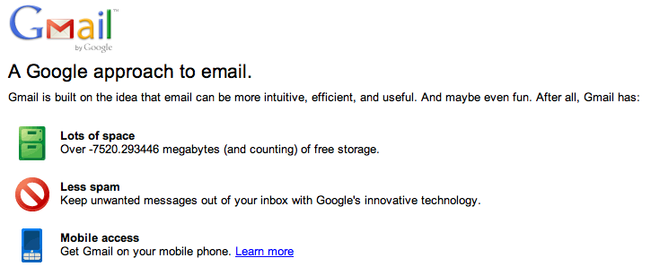

Magic functions and variables
Introduction
Opera comes with two special methods of the opera object—window.opera.defineMagicFunction() and window.opera.defineMagicVariable(). These allow you to override global functions and variables defined on a web page, which is especially useful when you want to write some User JS or Opera extensions that modify the behaviour of existing web pages and applications. In fact, these methods are not intended for use on regular pages, only User JS and extensions—calling them from a normal web page will have no effect.
This article gives you an explanation of how to use them.
opera.defineMagicFunction()
A User Script injected into a web page can override any functions the web page defines in its global scope with opera.defineMagicFunction(). For example, you might want to modify an existing page that includes a simple JavaScript function for showing and hiding an element upon the click of a button:
<div>
<button onclick="toggleElement(this.nextElementSibling)">show/hide</button>
<div>You can show/hide me</div>
</div>
<script type="text/javascript">
function toggleElement( elm ) {
if (elm.style.display == 'none') {
elm.style.display = '';
} else {
elm.style.display = 'none';
}
}</script>You could then override this function, adding a smooth CSS3 transition during the hiding and showing, with the following code:
window.opera.defineMagicFunction('toggleElement', function(realFunc, realThis, elm) {
elm.style.OTransition='opacity 1s';
elm.style.transition='opacity 1s';
if (elm.style.opacity == 1 || elm.style.opacity == '') {
elm.style.opacity = 0;
} else {
elm.style.opacity = 1;
}
});To see how this works, first install our defineMagicFunction() extension, then check out the defineMagicFunction() demo page, first with the extension disabled, then with the extension enabled, to see the effect.
opera.defineMagicVariable()
A User Script injected into a web page can redefine variables the page's script declares in its global scope with opera.defineMagicVariable(). This way you can easily change input data or objects the page uses.
CP. If you wanted to modify the storage data to make the counter negative for fun, you could do so using the following code:
if (window.location.href.indexOf('https://www.google.com/accounts/ServiceLogin?service=mail') == 0) {
window.opera.defineMagicVariable('CP', function(originalObj) {
/* the data is in a double array, [ [1,2], [1,2] ... ] */
for (var i = 0, len = originalObj.length; i < len; i++ ) {
originalObj[i][1] *= -1;
}
return originalObj;
}, null);
}See this in action by installing our GMail counter defineMagicVariable() extension. If you go to the GMail login page, you should see the effect shown in Figure 1. Please note that the User JS inside this extension will break if Google re-names the variable used in this page.

Figure 1: The GMail login page with negative storage counter, just for fun or profit?
Note: GMail uses https:// so to get this example to work using just User Script, you'll need to go to opera:config and check the "User JavaScript on HTTPS" check box in the "User Prefs" section. User Script wrapped in an extension, however, is enabled over HTTPS by default so this configuration change isn't needed.
Summary
This pretty much wraps up usage of these two interesting methods. We look forward to seeing how you make use of them in your Opera extensions! Please see the Opera UserJS documentation for more information.
This article is licensed under a Creative Commons Attribution-Noncommercial-Share Alike 3.0 Unported license.
Comments
The forum archive of this article is still available on My Opera.
No new comments accepted.